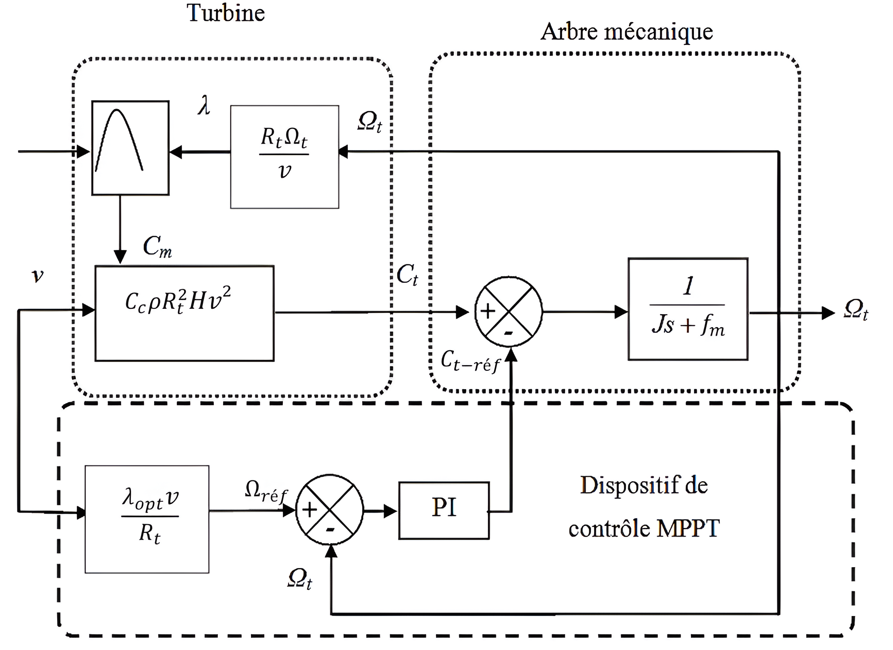

🌍 Project Overview
This final-year project focuses on the modeling and power optimization of a Vertical Axis Wind Turbine (VAWT) using a Savonius rotor. The primary challenge addressed is the unpredictable nature of wind speed, which requires advanced Maximum Power Point Tracking (MPPT) strategies to maintain high efficiency.
⚙️ Mathematical Modeling
Developing a complete simulation chain in MATLAB/Simulink:
- Aerodynamic Model: Calculation of wind power and power coefficients (Cp).
- Mechanical Chain: Modeling the multiplier, transmission shaft, and rotor dynamics.
- Betz Limit: Implementation of theoretical efficiency limits for power extraction.
🧠 AI-Driven Control
To optimize the PI Controller parameters (Kp, Ki), several metaheuristic algorithms were implemented and compared:
PSO
Particle Swarm Optimization
GWO
Grey Wolf Optimizer
DE
Differential Evolution
The GWO and DE algorithms showed superior robustness in finding the global minimum for the error function.
Max Power Coefficient (Cpmax)
📈 Key Results & MPPT
The system was tested using three major MPPT techniques:
- TSR (Tip Speed Ratio): Maintaining the optimal lambda (λopt = 0.78).
- OTC (Optimal Torque Control): Adjusting generator torque for peak efficiency.
- PSF (Power Signal Feedback): Tracking power based on reference curves.
Simulink Architecture & Control Loop
Detailed visualization of the wind conversion chain. This architecture implements a closed-loop system where AI algorithms optimize real-time response.

System Overview: Aerodynamic to Electrical Conversion
1. Physical Chain
Modeling the aerodynamics of the Savonius rotor and the PMSG generator for high-fidelity energy simulation.
2. MPPT Strategy
Intelligent "Supervisor" that tracks the Maximum Power Point by adjusting the Tip Speed Ratio in real-time.
3. AI-Tuned PI
PSO/GWO/DE optimized controller ensuring rapid response and minimal overshoot under gusty conditions.
4. Feedback Loop
Self-regulating mechanism that maintains system stability through constant output speed monitoring.